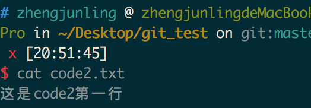
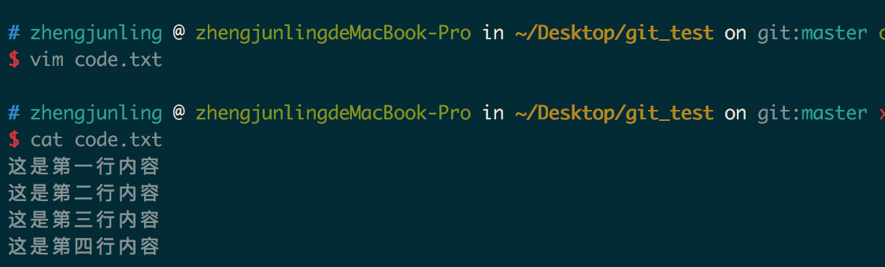
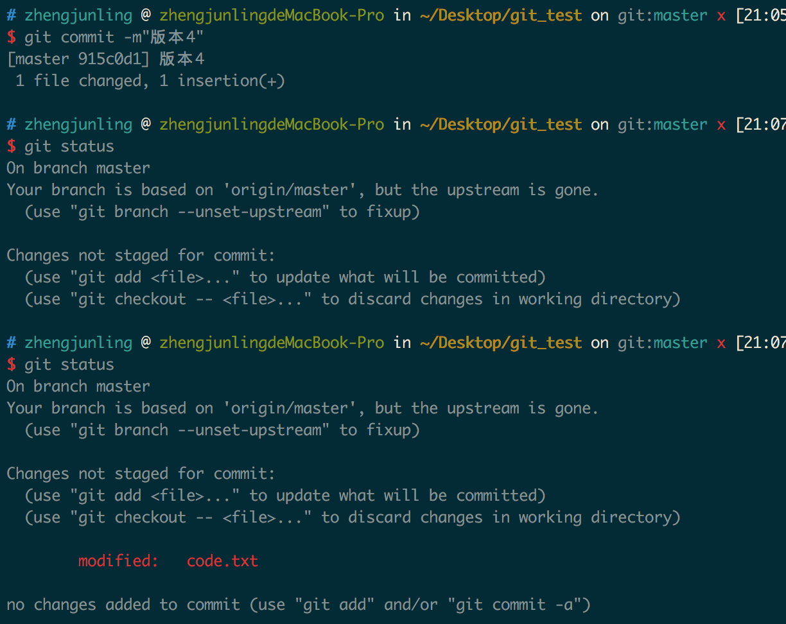
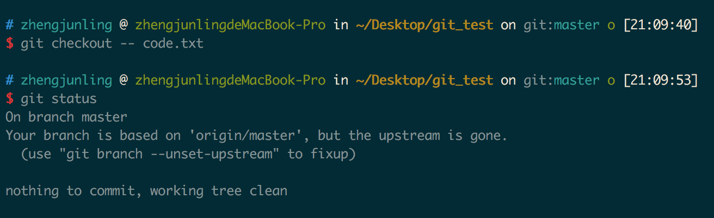
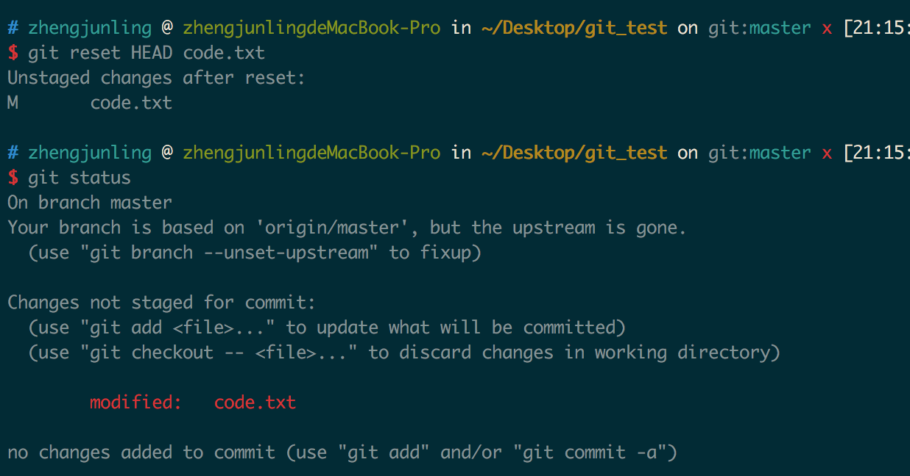
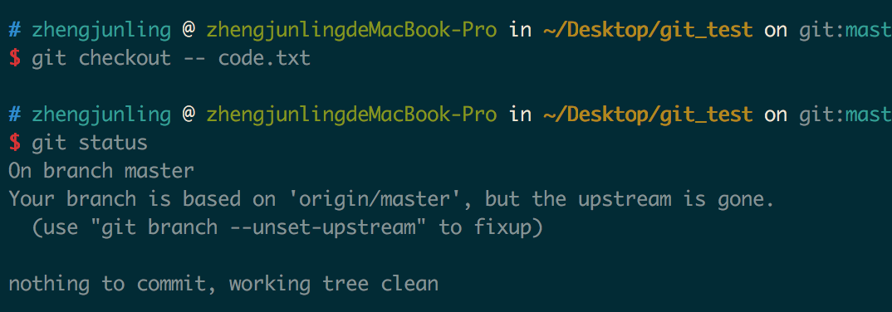
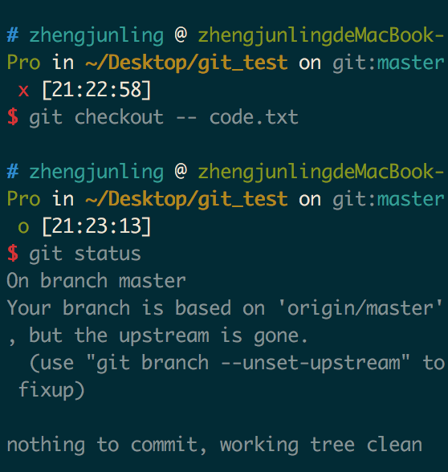
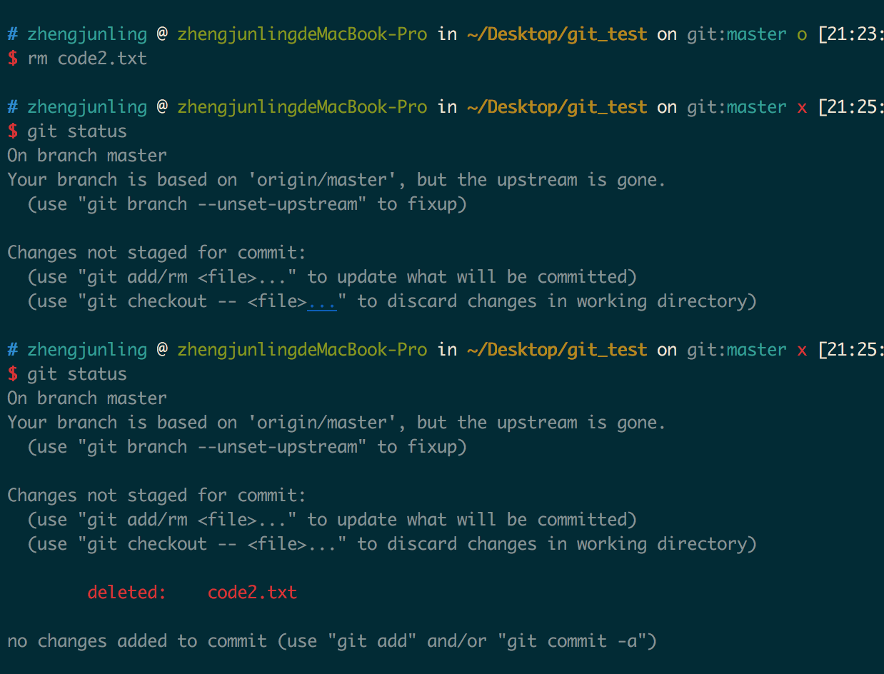

1. 工作区和暂存区
1.1. 工作区(Working Directory)
电脑中的目录，比如我们的git_test，就是一个工作区。
1.2. 版本库(Repository)
工作区有一个隐藏目录.git，这个不是工作区，而是git的版本库。
git的版本库里存了很多东西，其中最重要的就是
- 称为index(或者叫stage)的暂存区，
- 还有git为我们自动创建的第一个分支master，
- 以及指向master的一个指针叫HEAD。
因为我们创建git版本库时，git自动为我们创建了唯一一个master分支，所以，现在，git commit就是往master分支上提交更改。
你可以简单理解为，需要提交的文件修改通通放到暂存区，然后，一次性提交暂存区的所有修改。

前面讲了我们把文件往git版本库里添加的时候，是分两步执行的：
- 第一步是用git add把文件添加进去，实际上就是把文件修改添加到暂存区；
- 第二步是用git commit提交更改，实际上就是把暂存区的所有内容提交到当前分支。
下面在git_test目录下再创建一个文件code2.txt，然后编辑内容如下：

然后再次编辑code.txt内容，在其中加入一行，编辑后内容如下：

1.3. 查看当前工作树的状态
git status
 上面提示我们code.txt被修改，而code2.txt没有被跟踪。
上面提示我们code.txt被修改，而code2.txt没有被跟踪。
我们使用如下命令把code.txt和code2.txt加入到暂存区，然后再执行git status命令，结果如下：

所以git add命令是把所有提交的修改存放到暂存区。
然后，执行git commit就可以一次性把暂存区的所有修改提交到分支创建一个版本。

1.4. 管理修改
git管理的文件的修改，它只会提交暂存区的修改来创建版本。
编辑code.txt，并使用git add 命令将其添加到暂存区中。 
继续编辑code.txt，并在其中添加一行。

git commit创建一个版本，并使用git status查看，发现第二次修改code.txt内容之后，并没有将其添加的工作区，所以创建版本的时候并没有被提交。 
1.5. 撤销修改
git checkout --<文件>
继续上面的操作，提示我们可以使用 git checkout -- <文件> 来丢弃工作区的改动。执行如下命令，发现工作区干净了，第二次的改动内容也没了。 
我们继续编辑code.txt，并在其中添加如下内容，并将其添加的暂存区。

- git同样告诉我们，用命令git reset HEAD file可以把暂存区的修改撤销掉，重新放回工作区。 
现在若想丢弃code.txt的修改，执行如下命令即可
git checkout -- code.txt 现在，如果你不但改错了东西，还从暂存区提交到了版本库，则需要进行版本回退。
1.6. 小结：
- 场景1：当你改乱了工作区某个文件的内容，想直接丢弃工作区的修改时，用命令git checkout -- file。
- 场景2：当你不但改乱了工作区某个文件的内容，还添加到了暂存区时，想丢弃修改，分两步，第一步用命令git reset HEAD file，就回到了场景1，第二步按场景1操作。
- 场景3：已经提交了不合适的修改到版本库时，想要撤销本次提交，参考版本回退一节。
1.7. 对比文件的不同
- 继续编辑文件code.txt，在其中添加一行内容。

现在要对比工作区中code.txt和HEAD版本中code.txt的不同。使用如下命令：
git diff HEAD – 文件名
- 使用如下命令丢弃工作区的改动。 
现在要对比HEAD和HEAD^版本中code.txt的不同，使用如下命令：
git diff HEAD HEAD^ -- code.txt
1.8. 删除文件
我们把目录中的code2.txt删除。 这个时候，git知道删除了文件，因此，工作区和版本库就不一致了，git status命令会立刻提示哪些文件被删除了。 
现在你有两个选择，一是确实要从版本库中删除该文件，那就用命令git rm删掉，并且git commit：
 另一种情况是删错了，可以直接使用git checkout – code2.txt,这样文件code2.txt又回来了。
另一种情况是删错了，可以直接使用git checkout – code2.txt,这样文件code2.txt又回来了。

1.9. 小结：
命令git rm用于删除一个文件。如果一个文件已经被提交到版本库，那么你永远不用担心误删，但是要小心，你只能恢复文件到最新版本，你会丢失最近一次提交后你修改的内容。